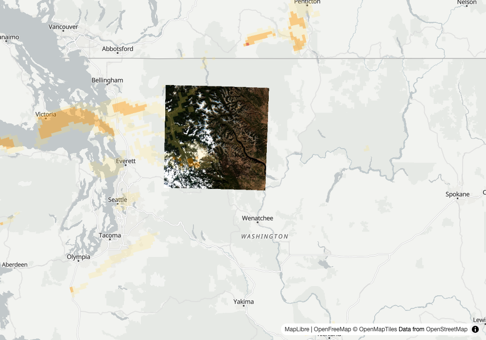

Round 1: the factors on Planetary Computer, the step that dropped the newest scene, and the brief on one pick (stops 31 to 33)
1
claims on the stack
insurance catastrophe adjuster
Input
Rolling Fork, Mississippi was hit by the March 24, 2023 tornado. Show me before and after, and tell me what data this came from.
Our read
Both Planetary Computer Sentinel-2 scenes over the Rolling Fork box now come back scaled, and the result says where the factors came from.
Learning → Fixed.
full read
Our read
Both Planetary Computer Sentinel-2 scenes over the Rolling Fork box now come back scaled, and the result says where the factors came from. The data is Sentinel-2 L2A from Microsoft Planetary Computer, tile 15SXS (100.0% of the box; the 15SYS tile covers only 41.1%). The 2023-08-18 scene (processing baseline 05.09) got scale 0.0001 and offset -0.1; the 2021-10-12 scene (baseline 03.00) got scale 0.0001 and offset 0; both say scaling_applied: true and source "collection convention: the item carries no raster:bands". The statistics are keyed by the expression, not B04_b1. The 2023 NDVI mean is 0.5358 (median 0.5799) and the 2021 mean is -0.0169, but the 2021 scene is 65.04% cloud (the scene-wide figure), so -0.0169 is not a usable vegetation figure and this card uses it only to test the scaling, not as a before picture. The 2023 min of -64.0 and max of 4.07 are outside the -1 to 1 range NDVI can take when both bands are positive, so some scaled pixels went below 0 after the -0.1 offset; the 2nd and 98th percentiles (0.1026, 0.9498) are the safer range. This is index statistics over a 14 by 11 km box, not damage evidence.show the data
search_imagery("planetary-computer", ["sentinel-2-l2a"], bbox=[-90.95, 32.86, -90.8, 32.96], datetime_range="2023-08-18T00:00:00Z/2023-08-19T23:59:59Z", limit=10)
4 items; tile 15SXS (covers_aoi_pct 100.0): S2A_MSIL2A_20230818T163841_R126_T15SXS_20230819T021410 cloud 0.014409
tile 15SYS (covers_aoi_pct 41.1) also returned; s2:processing_baseline of the 15SXS item: 05.09
search_imagery("planetary-computer", ["sentinel-2-l2a"], bbox=[-90.95, 32.86, -90.8, 32.96], datetime_range="2021-10-12T00:00:00Z/2021-10-13T23:59:59Z", limit=10)
2 items; tile 15SXS (covers_aoi_pct 100.0): S2B_MSIL2A_20211012T164139_R126_T15SXS_20211013T060154 cloud 65.04476
s2:processing_baseline of that item: 03.00
compute_statistics("planetary-computer", "sentinel-2-l2a", "S2A_MSIL2A_20230818T163841_R126_T15SXS_20230819T021410", expression="(B08-B04)/(B08+B04)", bbox=[-90.95, 32.86, -90.8, 32.96])
key: (B08-B04)/(B08+B04)
mean: 0.5357592447575882 median: 0.5799102519848118 std: 0.38024012773145444
min: -63.999999999998195 max: 4.066666666666659
percentile_2: 0.1026372059871704 percentile_98: 0.9497852659398744
count: 175104.0 valid_percent: 100.0
clipped_to: [-90.95, 32.86, -90.8, 32.96]
scaling_applied: true
band_scaling: 1 entry
scale 0.0001 offset -0.1 bands B01, B02, B03, B04, B05, B06, B07, B08, B09, B11, B12, B8A
source: collection convention: the item carries no raster:bands
compute_statistics("planetary-computer", "sentinel-2-l2a", "S2B_MSIL2A_20211012T164139_R126_T15SXS_20211013T060154", expression="(B08-B04)/(B08+B04)", bbox=[-90.95, 32.86, -90.8, 32.96])
key: (B08-B04)/(B08+B04)
mean: -0.01693815486057333 median: -0.02622974642156508 std: 0.06243147773886538
min: -0.5272072072072072 max: 0.7693144722524483
percentile_2: -0.1110584330923314 percentile_98: 0.1473065310662641
count: 175104.0 valid_percent: 100.0
clipped_to: [-90.95, 32.86, -90.8, 32.96]
scaling_applied: true
band_scaling: 1 entry
scale 0.0001 offset 0 bands B01, B02, B03, B04, B05, B06, B07, B08, B09, B11, B12, B8A
source: collection convention: the item carries no raster:bands
Learning → Fixed. Stop 31's commit message (PR 97) said of Planetary Computer Sentinel-2: "means were raw DN and an NDVI was biased with no warning". Field tests 15 and 16 contain no compute_statistics call on Planetary Computer sentinel-2-l2a, so there is no earlier transcript of the silent raw result to quote; that commit message is the record. Now both scenes return
scaling_applied: true and a band_scaling entry with scale 0.0001, source "collection convention: the item carries no raster:bands", offset -0.1 on the baseline 05.09 scene and 0 on the baseline 03.00 scene, and the key is the expression "(B08-B04)/(B08+B04)". Two differences from the expected shape: band_scaling is one entry listing 12 bands (B01 to B09, B11, B12 and B8A, B04 and B08 among them) rather than separate B04 and B08 entries, and I used tile 15SXS because it covers the whole box, not stop 31's 15SXT, so the means differ from its 0.2433 and 0.2042 and I did not reproduce those. Not checked: the apply_scaling=False path, a scene between baselines 03.xx and 04.00, and whether 0.5358 holds against an independent source.stop 31 collection-convention scaling on Planetary Computer sentinel-2-l2a · scaling_applied true on both scenes · offset -0.1 at baseline 05.09, 0 at baseline 03.00 · stats keyed by the expression · band_scaling source named
2
which portland
harbor pilot
Input
Show me the harbor approaches at Portland from the latest Landsat pass.
Our read
The harbor-approach pick for Portland, Maine is the 2026-10-05 scene and the reason now says why the newest day, 2026-10-21, was passed over.
Learning → Fixed.
full read
Our read
The harbor-approach pick for Portland, Maine is the 2026-10-05 scene and the reason now says why the newest day, 2026-10-21, was passed over. The bare name "Portland" is ambiguous (4 candidates, states spelled out: Oregon twice, Maine twice), so I used the Casco Bay box the earlier card used. Over the window the newest day is 2026-10-21 (23.01% cloud at 100.0% coverage, and 2.63% cloud at 66.6%). The pick, LC09_L2SP_012030_20261005_02_T1 (15.28% cloud, 100.0% coverage), ends its reason with "the newest, 2026-10-21, lost on cloud: 23.0% against the pick's 15.3%, outside the 5-point tie". Asked with limit=3 the same search returns 3 scenes (two on 10-21, one on 10-14), picks the 10-21 scene, and adds no clause. Newest is not the same as best here: 7.7 points of cloud separate them.show the data
geocode("Portland")
source: gazet name: Portland (United States, urban_centre) ambiguous: true
candidates (4):
Portland (United States, urban_centre) Oregon, United States urban_centre score 0.099 extent_basis own
Portland (US, locality) Oregon, United States locality score 0.085 extent_basis own
Portland (US, locality) Maine, United States locality score 0.084 extent_basis own
Portland (United States, urban_centre) Maine, United States urban_centre score 0.057 extent_basis own
geocode_note: 4 places match 'Portland' equally well; using Portland (Oregon, United States, urban_centre) (best score), not Portland (Oregon, United States, locality), Portland (Maine, United States, locality), Portland (Maine, United States, urban_centre). Pass the fuller name if another was meant. ambiguous: pass the fuller name or a bbox
search_imagery("planetary-computer", ["landsat-c2-l2"], bbox=[-70.40, 43.55, -69.90, 43.85], datetime_range="2026-10-01T00:00:00Z/2026-10-26T23:59:59Z", limit=10)
count: 8
recommended: LC09_L2SP_012030_20261005_02_T1 cloud 15.28 covers_aoi_pct 100.0
reason: 15.3% cloud but covers 100.0% of the area; the clearest scene (0.3% cloud) covers 84.2%; the newest, 2026-10-21, lost on cloud: 23.0% against the pick's 15.3%, outside the 5-point tie
LC09_L2SP_012030_20261021_02_T1 2026-10-21 cloud 23.01 covers_aoi_pct 100.0
LC09_L2SP_012029_20261021_02_T1 2026-10-21 cloud 2.63 covers_aoi_pct 66.6
LC09_L2SP_011030_20261014_02_T1 2026-10-14 cloud 53.29 covers_aoi_pct 87.0
LC08_L2SP_012030_20261013_02_T2 2026-10-13 cloud 100.0 covers_aoi_pct 100.0
LC08_L2SP_012029_20261013_02_T2 2026-10-13 cloud 100.0 covers_aoi_pct 65.6
LC08_L2SP_011030_20261006_02_T1 2026-10-06 cloud 0.33 covers_aoi_pct 84.2
LC09_L2SP_012030_20261005_02_T1 2026-10-05 cloud 15.28 covers_aoi_pct 100.0
LC09_L2SP_012029_20261005_02_T1 2026-10-05 cloud 55.59 covers_aoi_pct 67.3
search_imagery("planetary-computer", ["landsat-c2-l2"], bbox=[-70.40, 43.55, -69.90, 43.85], datetime_range="2026-10-01T00:00:00Z/2026-10-26T23:59:59Z", limit=3)
count: 3
recommended: LC09_L2SP_012030_20261021_02_T1 cloud 23.01 covers_aoi_pct 100.0
reason: 23.0% cloud but covers 100.0% of the area; the clearest scene (2.6% cloud) covers 66.6%
LC09_L2SP_012030_20261021_02_T1 2026-10-21 cloud 23.01 covers_aoi_pct 100.0
LC09_L2SP_012029_20261021_02_T1 2026-10-21 cloud 2.63 covers_aoi_pct 66.6
LC09_L2SP_011030_20261014_02_T1 2026-10-14 cloud 53.29 covers_aoi_pct 87.0
Learning → Fixed. Field test 16 quoted the reason "15.3% cloud but covers 100.0% of the area; the clearest scene (0.3% cloud) covers 84.2%" and gave no word on why the 2026-10-21 scene, the newest, was not chosen. Now the reason ends with "the newest, 2026-10-21, lost on cloud: 23.0% against the pick's 15.3%, outside the 5-point tie". Read against the scene list (my reading; the output names only the cloud step), the figures fit it: of the 8 scenes, the 10-13 pair is at 100% cloud and the 10-14 scene at 53.29% is over the 30% ceiling; the coverage band (within 5 points of 100.0) keeps the two 012030 scenes, 10-21 at 23.01% and 10-05 at 15.28%; the gap is 7.73 points, outside the 5-point tie, so cloud is the step that dropped the newest. The 2.63% scene on 10-21 covers only 66.6%, so it would have fallen at the coverage step, and the clause correctly quotes the 100%-coverage 10-21 scene. With limit=3 the pick is the newest day (2026-10-21), and the clause is correctly absent. Not checked: the ceiling-step and coverage-step wordings, which no live data here reaches, and a render of the pick.
stop 32 reason names the step that dropped the newest scene · cloud step quoted as 23.0% against 15.3% outside the 5-point tie · clause absent when the pick is the newest day (limit=3) · geocode ambiguity still lists 4 Portlands with states
3
the product
Earth briefs you
Input
Brief me on Chelan County, Washington: what changed in the last 7 days?
Our read
The brief now names one scene, S2C_10UFU_20261023_0_L2A, in its caption, map layer, preview URL and stac-map link, and the NDVI baseline is a second 10UFU scene that covers the same 47.6%…
Learning → Fixed.

map: Chelan County brief, S2C_10UFU_20261023_0_L2A ↗full read
Our read
The brief now names one scene, S2C_10UFU_20261023_0_L2A, in its caption, map layer, preview URL and stac-map link, and the NDVI baseline is a second 10UFU scene that covers the same 47.6% of the county. The pick is 8.9% cloud and covers 47.6% of the area (best of 8 in 7 days). The baseline S2C_10UFU_20261003_0_L2A is from 2026-10-03, 0.004% cloud, also 47.6%, so the 2 coverages do not differ and caveats is empty, as it should be. The brief text repeats the cloud on both scenes and says the comparison has no caveats. The means are still over the whole scene; the metric label names tile 10UFU, not the county.show the data
brief.py --place "Chelan County, Washington" --days 7 --out docs/img/ft18-chelan
Ran through harbor-cli run --light, at 0.55.0, once, exit 0. All 5 steps ran, including the Claude synthesis.
[3/5] searching fresh imagery
pick: S2C_10UFU_20261023_0_L2A, 2026-10-23, cloud_cover 8.8687, covers_aoi_pct 47.6 (coverage_basis footprint), best of 8 in 7 days
caption (brief html): "Sentinel-2, 2026-10-23, 8.9% cloud cover, covers 48% of the area" then "best of 8 scenes in the last 7 days." (the html joins the 2 with a dash character)
preview.png url in brief html: ...items/S2C_10UFU_20261023_0_L2A&assets=visual&max_size=768
stac-map link in brief html and map html: ...items/S2C_10UFU_20261023_0_L2A
map layer: "Sentinel-2 2026-10-23 (8.9% cloud)", tiles url ...items/S2C_10UFU_20261023_0_L2A&assets=visual
[3.5/5] ndvi_change
metric: NDVI (vegetation) over MGRS tile 10UFU
current: S2C_10UFU_20261023_0_L2A, 2026-10-23, cloud 8.8687, covers_aoi_pct 47.6, mean 0.544
baseline: S2C_10UFU_20261003_0_L2A, 2026-10-03, cloud 0.004074, covers_aoi_pct 47.6, mean 0.614
delta: -0.07, delta_pct: -11.5
caveats: []
window check (computed by the tester from the stop 33 rule, not tool output): 7-day window 2026-10-19 to 2026-10-26; baseline window 44 days ending 2026-10-18 (starts 2026-09-04); 2026-10-03 is inside it; same tile 10UFU
other 10UFU scene in the 7 days (data.json imagery.items): S2B_10UFU_20261021_0_L2A, cloud 0.000205, covers_aoi_pct 4.7
brief text: "NDVI over tile 10UFU fell from 0.614 (2026-10-03) to 0.544 (2026-10-23), a drop of 0.07 (-11.5%), with no caveats on the comparison."
brief text: "between 2026-10-03 (cloud 0.004%) and 2026-10-23 (cloud 8.9%). The tile covers 47.6% of the AOI."
files: brief-chelan-county--washington-2026-10-26.{md,html,data.json}, brief-map-chelan-county--washington-2026-10-26.html (no preview png is written; the preview is a titiler.xyz URL)
Learning → Fixed. Stop 33's status line in the course file said the pick, caption, map layer, preview and stac-map link come from one key, that the baseline is searched and ranked over the place by the same key on the same tile within 44 days ending a day before the window, and that the change block carries cloud and coverage on both scenes with a caveat past a 20 point gap. The new output shows S2C_10UFU_20261023_0_L2A in the caption, the map layer, the preview URL and the stac-map link, and nothing else. The change block holds cloud (8.8687 and 0.004074) and covers_aoi_pct (47.6 and 47.6) for both, the baseline is on tile 10UFU dated 2026-10-03 (inside 2026-09-04 to 2026-10-18), and no caveat appears because the gap is 0 points. Before the fix the baseline claimed 94.9% (a share of the tile); now it is 47.6% over the place. The run picked 2026-10-03, not the S2B_10UFU_20261018 baseline (10.2% cloud) of the pre-fix run; the output shows only the pick, so why 10-18 lost is not shown here. The caveat branch itself was not exercised, since the 2 coverages matched.
stop 33 live after its review fix · one pick across caption, map layer, preview URL and stac-map link · baseline covers 47.6% of the place on the same tile 10UFU · cloud and coverage on both scenes in the change block · no caveat when coverages match (47.6 and 47.6) · NDVI labelled by tile, still whole-scene
Reproduce
git clone https://github.com/dannybauman/groundstation && cd groundstation
bash scripts/doctor.sh # walks the setup chain, prints the fix
uv run evals/unit_checks.py # 204 offline checks
uv run scripts/field_test.py docs/field-test-2026-10-26-no18.cases.json